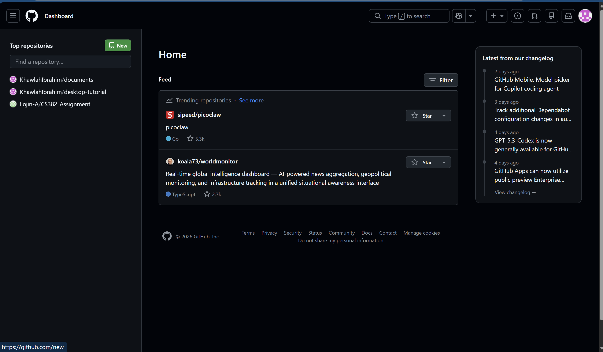

🎯 Creating a GitHub Repository
From new repo to README and .gitignore
Khawlah Almansouri
Creating a New Repository
Public vs Private
- Public: Anyone can view the code; suitable for educational or open‑source projects.
- Private: Only you and the people you grant access to can view the code.
- You can change the repository type later from the settings.
README.md
- It's a file that explains the idea of the project and how to run it.
- It's written in Markdown, using things like headings, lists, and links.
- README.md is automatically displayed on the main page of the repository.
.gitignore
- It's a file that tells Git which files or folders to ignore when you push your code.
- Useful for keeping sensitive information (like API keys) or unnecessary files (like node_modules) out of your repository.
- You can create a .gitignore file from scratch or use templates provided by GitHub.
1 / 5